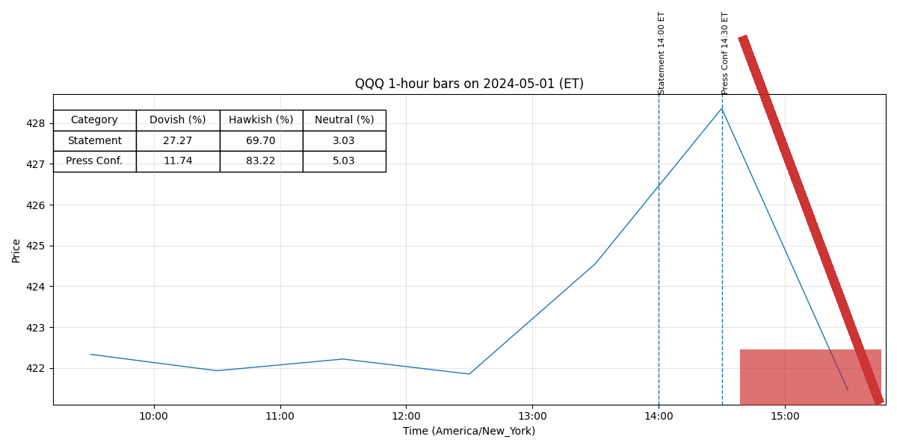

For release at 2:00 p.m. EDT May 1, 2024 Recent indicators suggest that economic activity has continued to expand at a solid pace. (0.466)
Job gains have remained strong, and the unemployment rate has remained low. (0.582)
Inflation has eased over the past year but remains elevated. (0.511)
In recent months, there has been a lack of further progress toward the Committee’s 2 percent inflation objective. (0.507)
The Committee judges that the risks to achieving its employment and inflation goals have moved toward better balance over the past year. (0.506)
The economic outlook is uncertain, and the Committee remains highly attentive to inflation risks. (0.429)
In addition, the Committee will continue reducing its holdings of Treasury securities and agency debt and agency mortgage-backed securities. (0.621)
Beginning in June, the Committee will slow the pace of decline of its securities holdings by reducing the monthly redemption cap on Treasury securities from $60 billion to $25 billion. (0.605)
The Committee will maintain the monthly redemption cap on agency debt and agency mortgage-backed securities at $35 billion and will reinvest any (more) -2- principal payments in excess of this cap into Treasury securities. (0.602)
The Committee is strongly committed to returning inflation to its 2 percent objective. (0.552)
The Committee’s assessments will take into account a wide range of information, including readings on labor market conditions, inflation pressures and inflation expectations, and financial and international developments. (0.536)
For release at 2:00 p.m. EDT May 1, 2024 Decisions Regarding Monetary Policy Implementation The Federal Reserve has made the following decisions to implement the monetary policy stance announced by the Federal Open Market Committee in its statement on May 1, 2024: • The Board of Governors of the Federal Reserve System voted unanimously to maintain the interest rate paid on reserve balances at 5.4 percent, effective May 2, 2024. (0.508)
• As part of its policy decision, the Federal Open Market Committee voted to direct the Open Market Desk at the Federal Reserve Bank of New York, until instructed otherwise, to execute transactions in the System Open Market Account in accordance with the following domestic policy directive: "Effective May 2, 2024, the Federal Open Market Committee directs the Desk to: (0.515)
o Roll over at auction the amount of principal payments from the Federal Reserve's holdings of Treasury securities maturing in May that exceeds a cap of $60 billion per month. (0.532)
Beginning on June 1, roll over at auction the amount of principal payments from the Federal Reserve's holdings of Treasury securities maturing in each calendar month that exceeds a cap of $25 billion per month. (0.540)
Redeem Treasury coupon securities up to these monthly caps and Treasury bills to the extent that coupon principal payments are less than the monthly caps. (0.405)
o Reinvest into agency mortgage-backed securities (MBS) the amount of principal payments from the Federal Reserve's holdings of agency debt and agency MBS received in May that exceeds a cap of $35 billion per month. (0.641)
Beginning on June 1, reinvest the amount of principal payments from the Federal Reserve's holdings of agency debt and agency MBS received in each calendar month that exceeds a cap of $35 billion per month into Treasury securities to roughly match the maturity composition of Treasury securities outstanding. (0.538)
(more) -2- • In a related action, the Board of Governors of the Federal Reserve System voted unanimously to approve the establishment of the primary credit rate at the existing level of 5.5 percent. (0.537)
This information will be updated as appropriate to reflect decisions of the Federal Open Market Committee or the Board of Governors regarding details of the Federal Reserve's operational tools and approach used to implement monetary policy. (0.603)
For release at 2:00 p.m. EDT March 20, 2024
Recent indicators suggest that economic activity has been expanding at a solid pace. (0.420)
Job
gains have remained strong, and the unemployment rate has remained low. (0.582)
Inflation has eased
over the past year but remains elevated. (0.511)
The Committee judges that the risks to achieving its employment
and inflation goals are moving into better balance. (0.503)
The economic outlook is uncertain, and the
Committee remains highly attentive to inflation risks. (0.429)
In addition, the Committee will continue reducing its holdings of Treasury securities and agency
debt and agency mortgage-backed securities, as described in its previously announced plans. (0.572)
The Committee is strongly committed to returning inflation to its 2 percent objective. (0.552)
The Committee’s assessments will take
(more)
-2-
into account a wide range of information, including readings on labor market conditions,
inflation pressures and inflation expectations, and financial and international developments. (0.548)
For release at 2:00 p.m. EDT March 20, 2024
Decisions Regarding Monetary Policy Implementation
The Federal Reserve has made the following decisions to implement the monetary policy stance
announced by the Federal Open Market Committee in its statement on March 20, 2024:
• The Board of Governors of the Federal Reserve System voted unanimously to maintain the
interest rate paid on reserve balances at 5.4 percent, effective March 21, 2024. (0.516)
• As part of its policy decision, the Federal Open Market Committee voted to direct the Open
Market Desk at the Federal Reserve Bank of New York, until instructed otherwise, to
execute transactions in the System Open Market Account in accordance with the following
domestic policy directive:
"Effective March 21, 2024, the Federal Open Market Committee directs the Desk to: (0.516)
o Roll over at auction the amount of principal payments from the Federal Reserve's
holdings of Treasury securities maturing in each calendar month that exceeds a
cap of $60 billion per month. (0.511)
Redeem Treasury coupon securities up to this
monthly cap and Treasury bills to the extent that coupon principal payments are
less than the monthly cap. (0.398)
o Reinvest into agency mortgage-backed securities (MBS) the amount of principal
payments from the Federal Reserve's holdings of agency debt and agency MBS
received in each calendar month that exceeds a cap of $35 billion per month. (0.639)
• In a related action, the Board of Governors of the Federal Reserve System voted
unanimously to approve the establishment of the primary credit rate at the existing level
of 5.5 percent. (0.561)
(more)
-2-
This information will be updated as appropriate to reflect decisions of the Federal Open Market
Committee or the Board of Governors regarding details of the Federal Reserve's operational tools
and approach used to implement monetary policy. (0.625)
The Committee seeks to achieve maximum employment and inflation at the rate of 2 percent over the longer run. (0.612)
In support of its goals, the Committee decided to maintain the target range for the federal funds rate at 5-1/4 to 5-1/2 percent. (0.505)
In considering any adjustments to the target range for the federal funds rate, the Committee will carefully assess incoming data, the evolving outlook, and the balance of risks. (0.427)
The Committee does not expect it will be appropriate to reduce the target range until it has gained greater confidence that inflation is moving sustainably toward 2 percent. (0.425)
In assessing the appropriate stance of monetary policy, the Committee will continue to monitor the implications of incoming information for the economic outlook. (0.775)
The Committee would be prepared to adjust the stance of monetary policy as appropriate if risks emerge that could impede the attainment of the Committee’s goals. (0.721)
Voting for the monetary policy action were Jerome H. Powell, Chair; John C. Williams, Vice Chair; Thomas I. Barkin; Michael S. Barr; Raphael W. Bostic; Michelle W. Bowman; Lisa D. Cook; Mary C. Daly; Philip N. Jefferson; Adriana D. Kugler; Loretta J. Mester; and Christopher J. Waller. (0.791)
-0- Attachment For media inquiries, please email media@frb.gov or call 202-452-2955. (0.646)
o Conduct standing overnight repurchase agreement operations with a minimum bid rate of 5.5 percent and with an aggregate operation limit of $500 billion. (0.729)
o Conduct standing overnight reverse repurchase agreement operations at an offering rate of 5.3 percent and with a per-counterparty limit of $160 billion per day. (0.759)
o Allow modest deviations from stated amounts for reinvestments, if needed for operational reasons. (0.756)
o Engage in dollar roll and coupon swap transactions as necessary to facilitate settlement of the Federal Reserve's agency MBS transactions."" (0.559)
More information regarding open market operations and reinvestments may be found on the Federal Reserve Bank of New York's website. (0.801)